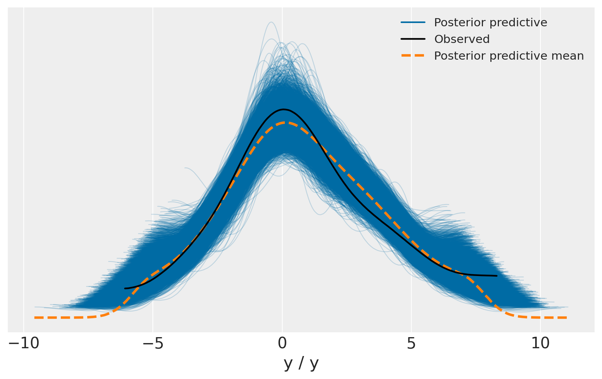

Regressione lineare con PyMC
Contents
39. Regressione lineare con PyMC#
In questo capitolo esamineremo nuovamente il modello di regressione lineare. In generale, i frequentisti pensano alla regressione lineare come segue:
dove
\(Y\) è l’output che vogliamo prevedere (o variabile dipendente),
\(X\) è il nostro predittore (o variabile indipendente),
\(\alpha\), \(\beta\) sono i coefficienti (o parametri) del modello che vogliamo stimare,
\(\varepsilon\) è un termine di errore che si presume distribuito normalmente.
Con queste premesse, è possibile utilizzare il metodo dei minimi quadrati ordinari (OLS) o la massima verosimiglianza per trovare le stime dei parametri \(\alpha\) e \(\beta\) che minimizzano una qualche quantità di interesse (per es., la somma dei residui quadratici).
39.1. Riformulazione probabilistica#
I bayesiani esprimono questo modello in termini di distribuzioni di probabilità. La regressione lineare presentata sopra può essere riformulata nel modo seguente:
dove
\(\alpha\) è l’intercetta,
\(\beta\) è la pendenza
\(\sigma\) rappresenta l’errore di osservazione.
A parole: si considera \(Y\) come una variabile casuale (o vettore casuale) di cui ogni elemento (osservazione) è distribuito secondo una distribuzione Normale. La media di questa distribuzione normale è fornita dal predittore lineare (\(\alpha + \beta X\)) con varianza \(\sigma^2\).
Sebbene questo sia essenzialmente lo stesso modello, ci sono due vantaggi fondamentali ad usare un approccio bayesiano:
Distribuzioni a priori: è possibile quantificare le conoscenza a priori che si possiedono imponendo delle priors sui parametri. Ad esempio, se lo pensiamo che \(\sigma\) sia probabilmente piccola, possiamo scelgiere una distribuzione a priori per questo parametro avente una massa di probabilità maggiore sui valori bassi.
Quantificazione dell’incertezza: la stima bayesiana non produce una singola stima del parametro \(\beta\) (come nel caso frequentista), ma invece una distribuzione a posteriori che specifica la credibilità relativa dei diversi valori \(\beta\). Ad esempio, con pochi dati la nostra incertezza su \(\beta\) sarà molto grande e la distribuzione a posteriori sarà molto larga.
Poiché stiamo costruendo un modello bayesiano, dobbiamo assegnare una distribuzione a priori alle variabili sconosciute nel modello. Scegliamo distribuzioni a priori normali a media zero con varianza di 100 per entrambi i coefficienti di regressione, il che corrisponde a fornire informazioni deboli sui veri valori dei parametri. Scegliamo una distribuzione normale troncata (distribuzione normale limitata a zero) come distribuzione a priori per \(\sigma\).
In questo esempio (che riproduce ciò che è riportato sul sito PyMC), useremo dei dati simulati, per cui conosceremo il “vero” valore dei parametri. Iniziamo quindi a creare di dati. Possiamo simulare dei dati artificiali dal modello descritto sopra utilizzando il modulo random di NumPy, per poi utilizzare PyMC per fare inferenza sul valore dei parametri.
39.2. Generare i dati#
Per iniziare a costruire il modello lineare con PyMC iniziamo ad importare i moduli richiesti.
import matplotlib.pyplot as plt
import numpy as np
import pandas as pd
import pymc as pm
import xarray as xr
import arviz as az
import bambi as bmb
import warnings
warnings.filterwarnings('ignore')
warnings.simplefilter('ignore')
from pymc import HalfNormal, Model, Normal, sample
print(f"Running on PyMC v{pm.__version__}")
Running on PyMC v5.0.1
RANDOM_SEED = 42
rng = np.random.default_rng(RANDOM_SEED)
%config InlineBackend.figure_format = 'retina'
az.style.use("arviz-darkgrid")
plt.style.use('tableau-colorblind10')
Genero i dati.
# True parameter values
alpha, sigma = 1, 1
beta = 2.5
# Size of dataset
size = 100
# Predictor variable
X = np.random.randn(size)
# Simulate outcome variable
Y = alpha + beta * X + rng.normal(size=size) * sigma
#True regression line
true_regression_line = alpha + beta * X
Ecco un grafico i dati simulati.
_, ax = plt.subplots(figsize=(10, 6))
ax.plot(X, Y, "x", label="sampled data")
ax.plot(X, true_regression_line, label="true regression line", lw=2.0)
ax.set_ylabel("Y")
ax.set_xlabel("X")
plt.legend(loc=0);

39.3. Specificazione del modello#
Ora definiamo il modello e otteniamo un campione casuale dalla distribuzione a posteriori dei parametri.
with Model() as model: # model specifications in PyMC are wrapped in a with-statement
# Define priors
alpha = Normal("alpha", mu=0, sigma=10)
beta = Normal("beta", mu=0, sigma=10)
sigma = HalfNormal("sigma", sigma=1)
# Expected value of outcome
mu = alpha + beta * X
# Likelihood of observations
Y_obs = pm.Normal("Y_obs", mu=mu, sigma=sigma, observed=Y)
idata = pm.sample()
Auto-assigning NUTS sampler...
Initializing NUTS using jitter+adapt_diag...
Multiprocess sampling (4 chains in 4 jobs)
NUTS: [alpha, beta, sigma]
Sampling 4 chains for 1_000 tune and 1_000 draw iterations (4_000 + 4_000 draws total) took 24 seconds.
La funzione sample esegue l’algoritmo NUTS (di default) per il numero specificato di iterazioni e restituisce un oggetto InferenceData che contiene i campioni raccolti, insieme ad altri attributi. Si noti che sample genera una serie di catene parallele, a seconda del numero di core di calcolo presenti sulla macchina.
Diamo una rapida occhiata al modello che abbiamo appena stimato utilizzando il metodo model_to_graphviz.
pm.model_to_graphviz(model)

Abbiamo formulato alcune ipotesi nell’assemblare il modello ed è una buona idea renderle esplicite. La prima assunzione è che i dati \(y\) sono indipendenti condizionatamente a \(X\); la seconda è che il valore atteso della \(Y\) è una funzione lineare di \(X\); la terza è che, condizionatamente a \(X_i\), la variabile \(Y\) varia normalmente attorno al suo valore atteso con una deviazione standard \(\sigma\) che risulta essere sempre uguale per \(i \in 1, ..., n\). Queste sono le ipotesi della regressione Normale bayesiana.
40. Capire i risultati della regressione bayesiana#
L’insieme di campioni ottenuti dalla distribuzione a posteriori forma una “traccia” e questa traccia è stata restituita dal metodo pm.sample. Esaminiamo questo oggetto:
idata
-
<xarray.Dataset> Dimensions: (chain: 4, draw: 1000) Coordinates: * chain (chain) int64 0 1 2 3 * draw (draw) int64 0 1 2 3 4 5 6 7 8 ... 992 993 994 995 996 997 998 999 Data variables: alpha (chain, draw) float64 0.8893 0.9692 0.9123 ... 1.027 0.9281 0.8974 beta (chain, draw) float64 2.526 2.552 2.533 2.368 ... 2.378 2.404 2.5 sigma (chain, draw) float64 0.7034 0.7199 0.7324 ... 0.8119 0.7388 0.8971 Attributes: created_at: 2023-01-05T10:40:16.099581 arviz_version: 0.14.0 inference_library: pymc inference_library_version: 5.0.0 sampling_time: 22.116461992263794 tuning_steps: 1000 -
<xarray.Dataset> Dimensions: (chain: 4, draw: 1000) Coordinates: * chain (chain) int64 0 1 2 3 * draw (draw) int64 0 1 2 3 4 5 ... 994 995 996 997 998 999 Data variables: (12/17) perf_counter_start (chain, draw) float64 19.92 19.92 ... 21.82 21.83 n_steps (chain, draw) float64 3.0 3.0 1.0 3.0 ... 3.0 3.0 3.0 lp (chain, draw) float64 -125.3 -125.1 ... -123.3 -125.5 acceptance_rate (chain, draw) float64 0.9285 1.0 ... 0.9695 0.6821 smallest_eigval (chain, draw) float64 nan nan nan nan ... nan nan nan max_energy_error (chain, draw) float64 -0.2837 -0.5014 ... 0.6241 ... ... energy (chain, draw) float64 125.8 126.0 ... 124.4 125.7 step_size (chain, draw) float64 1.048 1.048 ... 1.063 1.063 process_time_diff (chain, draw) float64 0.000867 0.000525 ... 0.00046 diverging (chain, draw) bool False False False ... False False index_in_trajectory (chain, draw) int64 3 -1 -1 -2 2 -1 ... 1 3 -2 1 -2 tree_depth (chain, draw) int64 2 2 1 2 2 2 2 2 ... 2 2 2 2 2 2 2 Attributes: created_at: 2023-01-05T10:40:16.118946 arviz_version: 0.14.0 inference_library: pymc inference_library_version: 5.0.0 sampling_time: 22.116461992263794 tuning_steps: 1000 -
<xarray.Dataset> Dimensions: (Y_obs_dim_0: 100) Coordinates: * Y_obs_dim_0 (Y_obs_dim_0) int64 0 1 2 3 4 5 6 7 ... 92 93 94 95 96 97 98 99 Data variables: Y_obs (Y_obs_dim_0) float64 6.059 -0.001791 0.99 ... 3.106 -1.145 Attributes: created_at: 2023-01-05T10:40:16.125550 arviz_version: 0.14.0 inference_library: pymc inference_library_version: 5.0.0
Si noti che ci sono 4 catene, ciascuna formata da 1000 elementi, per ciascuno dei tre parametri (\(\alpha\), \(\beta\), \(\sigma\))
I vari attributi dell’oggetto InferenceData possono essere esaminati in modo simile a un dict in numpy.arrays. Ad esempio, possiamo vedere i primi 5 valori per la variabile alpha in ogni catena come segue:
idata.posterior["alpha"].sel(draw=slice(0, 4))
<xarray.DataArray 'alpha' (chain: 4, draw: 5)>
array([[0.93457555, 0.94408288, 1.00396839, 0.92279521, 0.83824743],
[0.88454196, 1.01683742, 1.03192335, 0.96097758, 0.95153755],
[0.83788489, 0.99938309, 1.06372405, 0.9001598 , 0.92121756],
[0.83295119, 1.07663621, 1.00626513, 0.91602023, 0.81094374]])
Coordinates:
* chain (chain) int64 0 1 2 3
* draw (draw) int64 0 1 2 3 4Ma è molto più semplice ispezionare la distribuzione a posteriori usando le funzioni del modulo Arivz.
Un trace plot può essere creato usando plot_trace.
var_names = ['alpha', 'beta', 'sigma']
az.plot_trace(idata, var_names=var_names);

La colonna di sinistra è costituita da un istogramma lisciato (utilizzando la stima della densità del kernel) della distribuzione a posteriori di ciascuna variabile casuale stocastica mentre la colonna di destra contiene i campioni della catena di Markov tracciati in ordine sequenziale.
Il grafico indica che abbiamo recuperato con successo alcuni campioni “well-behaved” e abbiamo ottenuto quella che sembra essere una buona stima della distribuzione a posteriori.
Esaminiamo ora le stime numeriche dei parametri eseguendo la funzione summary:
az.summary(idata)
| mean | sd | hdi_3% | hdi_97% | mcse_mean | mcse_sd | ess_bulk | ess_tail | r_hat | |
|---|---|---|---|---|---|---|---|---|---|
| alpha | 0.951 | 0.079 | 0.807 | 1.100 | 0.001 | 0.001 | 5463.0 | 3359.0 | 1.0 |
| beta | 2.536 | 0.068 | 2.396 | 2.655 | 0.001 | 0.001 | 5884.0 | 3618.0 | 1.0 |
| sigma | 0.786 | 0.056 | 0.682 | 0.888 | 0.001 | 0.001 | 5999.0 | 2797.0 | 1.0 |
Si noti come il modello, a partire da un campione casuale di sole 100 osservazioni, è stato in grado di recuperare delle stime dei parametri molto vicine ai valori “veri” del meccanismo generatore dei dati che abbiamo utilizzato per creare il campione.
Nell’inferenza bayesiana, le stime dei parametri sono facili da interpretare. Per \(\alpha\), abbiamo una media di 0.95 con una deviazione standard di 0.104 e un intervallo di credibilità del 94% compreso tra 0.75 e 1.14. L’acronimo HDI sta per highest density interval – è possibile scegliere un’ampiezza diversa utilizzando l’argomento hdi_prob=.
Possiamo visualizzare la stima a posteriori del parametro \(\beta\), ad esempio, nel modo seguente.
az.plot_posterior(idata, var_names=['beta'], figsize=(7, 3));

Con buona confidenza possiamo affermare che la stima di \(\beta\) è circa uguale a 2.35.
40.1. Bambi#
Per rendere le cose ancora più semplici, la libreria bambi richiede soltanto, per la specificazione del modello, una sintassi simile a quella di brms in R. Importiamo la libreria.
import bambi as bmb
Definiamo un DataFrame che contiene i dati.
df = pd.DataFrame({
'x': X,
'y': Y
})
df
| x | y | |
|---|---|---|
| 0 | 1.145890 | 4.169442 |
| 1 | -0.396827 | -1.032053 |
| 2 | -0.536422 | 0.409396 |
| 3 | 2.407740 | 7.959915 |
| 4 | -1.260920 | -4.103336 |
| ... | ... | ... |
| 95 | -0.702761 | -2.204016 |
| 96 | -1.197627 | -3.316768 |
| 97 | -0.273057 | -0.679889 |
| 98 | -1.144219 | -1.460772 |
| 99 | -0.228361 | -0.476381 |
100 rows × 2 columns
bambi produce di default dei prior ‘intelligenti’. Ma per confrontare il risultato con quello precedente, definiamo gli stessi priors usati sopra.
# Set the prior when adding a term to the model; more details on this below.
priors = {
'Intercept': bmb.Prior("Normal", mu=0, sigma=10),
'x': bmb.Prior("Normal", mu=0, sigma=10),
'y_sigma': bmb.Prior("HalfNormal", mu=0, sigma=1)
}
Specifichiamo il modello.
model = bmb.Model("y ~ x", df, priors=priors)
Eseguiamo il campionamento.
idata_bambi = model.fit(draws=3000)
Auto-assigning NUTS sampler...
Initializing NUTS using jitter+adapt_diag...
Multiprocess sampling (4 chains in 4 jobs)
NUTS: [y_sigma, Intercept, x]
Sampling 4 chains for 1_000 tune and 3_000 draw iterations (4_000 + 12_000 draws total) took 25 seconds.
Esaminiamo la traccia.
az.plot_trace(idata_bambi);

Il sommario numerico riproduce i risultati ottenuti con PyMC.
az.summary(idata_bambi)
| mean | sd | hdi_3% | hdi_97% | mcse_mean | mcse_sd | ess_bulk | ess_tail | r_hat | |
|---|---|---|---|---|---|---|---|---|---|
| Intercept | 0.951 | 0.080 | 0.799 | 1.100 | 0.001 | 0.0 | 18008.0 | 9319.0 | 1.0 |
| x | 2.537 | 0.070 | 2.410 | 2.672 | 0.001 | 0.0 | 16708.0 | 9492.0 | 1.0 |
| y_sigma | 0.790 | 0.057 | 0.684 | 0.895 | 0.000 | 0.0 | 15955.0 | 9416.0 | 1.0 |
40.2. Distribuzione predittiva a posteriori#
Una volta calcolata la distribuzione a posteriori, possiamo usarla per calcolare la distribuzione predittiva a posteriori. Come suggerisce il nome, si tratta di previsioni che presuppongono che i parametri del modello siano distribuiti come specificato dalle distribuzioni a posteriori. Pertanto, la distribuzione predittiva a posteriori include l’incertezza sui parametri.
La distribuzione predittiva a posteriori si genera nel modo seguente. Vengono generati \(M\) campioni \(\{x, y\}\). In ciascuno di questi campioni, la variabile \(x\) è uguale a quella del campione osservato. Questa è un’assunzione del modello di regressione lineare: i valori \(x\) sono considerati “fissi” nell’universo dei campioni. In ciascun campione della distribuzione predittiva a posteriori, ciascun valore \(y_i\), con \(i\) = 1, … \(n\), viene generato prendendo un valore a caso dalla seguente distribuzione
laddove i valori dei parametri \(\alpha\), \(\beta\) e \(\sigma\) vengono presi a caso dalle corrispondenti distribuzioni a posteriori di questi parametri.
Questa procedura è implementata in bambi nel metodo predict() che utilizza i dati az.InferenceData. L’istruzione seguente genera la distribuzione predittiva a posteriori per i dati dell’esempio.
posterior_predictive = model.predict(idata_bambi, kind="pps")
La distribuzione predittiva a posteriori può essere usata come strumento diagnostico, come mostrato di seguito usando az.plot_ppc(). Le linee blu rappresentano le stime della distribuzione predittiva a posteriori e la linea nera rappresenta i dati osservati. La figura mostra che, in questo caso, le previsioni a posteriori corrispondono in maniera adeguata ai dati osservati, per tutta la gamma dei valori della variabile dipendente.
az.plot_ppc(idata_bambi, group="posterior", figsize=(8, 5));

40.3. Watermark#
%load_ext watermark
%watermark -n -u -v -iv -w
The watermark extension is already loaded. To reload it, use:
%reload_ext watermark
Last updated: Tue Jan 03 2023
Python implementation: CPython
Python version : 3.8.15
IPython version : 8.7.0
xarray : 2022.12.0
matplotlib: 3.6.2
numpy : 1.24.0
arviz : 0.14.0
sys : 3.8.15 (default, Nov 24 2022, 09:04:07)
[Clang 14.0.6 ]
pandas : 1.5.2
seaborn : 0.12.1
pymc : 5.0.0
bambi : 0.9.2
Watermark: 2.3.1